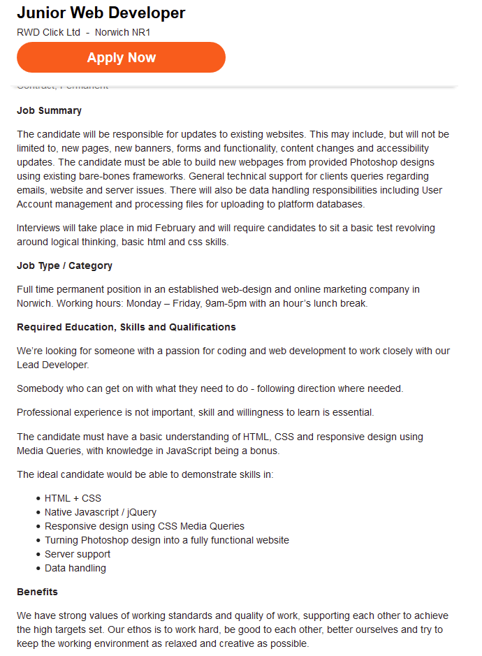

Welcome to The Job Page, here we will Showcase 2 Web development jobs, and we will compare them with each other and tell you the benefits of each job and their workplace. Below is the first job I will be showcasing.

Above is the Job we will be looking at, the job advertised is for a Senior Web Developer, in the Norwich area, as I am from there I found it appropriate. As this is for a senior, this means that the job will only be available for people with experience in web development, usually 10+ years. Also notice that they are asking for people with experience in other areas such as jQuery and PHP, these are important parts of the big picture of web development, but are usually taught at a higher level. overall this job looks like it would be perfect for a senior as it offers great benefits and good room to expand as much as a senior will allow you.
The next job we will look at is below and is also around Norwich, but this time it's a Junior position.
Above is the next job we will be looking at. It is a junior Web Development position. As this is a junior position the pay is a good amount lower as part of the job ius learning and being trained. and as the last job they also want some experience in JQuery, as it is a valuable skill. What I like about this Job is that they dont require people to have any personal experience, this is great for people who are just starting out in the web development industry